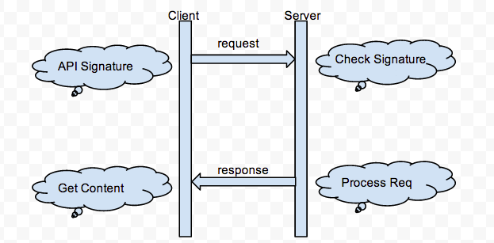
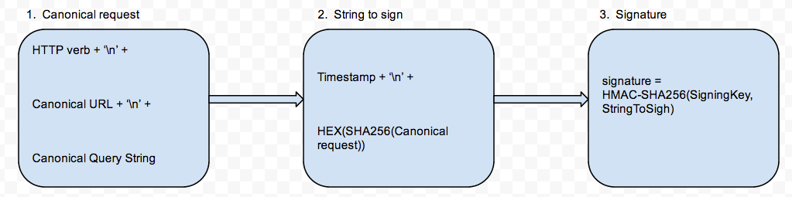

RESTful API面向公共开放时候，除了性能之外安全也是很重要的， 本方案主要目的是解决它所面临的安全挑战
通过对访问API的每个请求进行签名，使得每次请求都是可信的，而且是不可伪造的，他的大致流程是这样的:
如此看来Signature的过程是重中之重了，它的生成总共分为三步:
假定我们有一个http request的消息体是这样的:
curl -i -X POST http://127.0.0.1:9898/v1/zabbix -H "X-Auth-Token: 1cb9337742733ccd8482167609266ae6" \
-H "X-Neunn-UUID: 7eebe000a41a485eb6535e9b5aba9310" \
-H "X-Neunn-Sign: 313ccf919e4f42faa30d69cc3727b907" \
--data "{'output': 'extend', 'host': '20.20.20.34', 'application': 'Memory'}"
---Header---
POST /v1/zabbix HTTP/1.0
Accept: application/json
Accept-Encoding: gzip, deflate, compress
Content-Length: 68
Content-Type: application/json
Host: 127.0.0.1:9898
X-Auth-Token: 1cb9337742733ccd8482167609266ae6
Date: Fri, 28 Feb 2014 06:25:24 GMT
X-Neunn-UUID: 7eebe000a41a485eb6535e9b5aba9310
X-Neunn-Sign: 313ccf919e4f42faa30d69cc3727b907
---Body---
{"output": "extend", "host": "20.20.20.34", "application": "Memory"}
相关说明：
- HTTP verb，该请求是POST方法
- URL，不解释
- Query String，Get方法就是请求的参数，Post就是请求的Body部分，对于Get请求注意要排序后再拼接
- TimeStamp，采用ISO8601标准，Client与Server都是用Header中Date的值进行转换使用
- SigningKey，这个key相当于签名的钥匙，可以考虑使用md5(password)，更安全的作法是使用Hash算法独立生成
- HMAC-SHA256，一种签名算法，使用它主要是参考aws
- X-Neunn-UUID，Server端用来反查SigningKey
- X-Neunn-Sign，Client生成的签名信息，传入Server用于比对签名
Client是如何拥有UUID和SigningKey的:
通常使用SDK开发时，UUID和SigningKey是可以直接发放给用户使用的，
也可用使用username和password通过Https请求获取。
如果我们没有使用HTTPS，而且消息体被截获，那么怎么保证API不被恶意调用，所谓的中间人攻击:
Server端可以对TimeStamp进行校验，比如可以超过Date值5min的请求，被终止调用，这样可以在被攻击的时候减少损失。
如此多的加密签名计算过程，是否对整体访问性能有影响:
有影响是必须的，安全和快速是矛盾的！